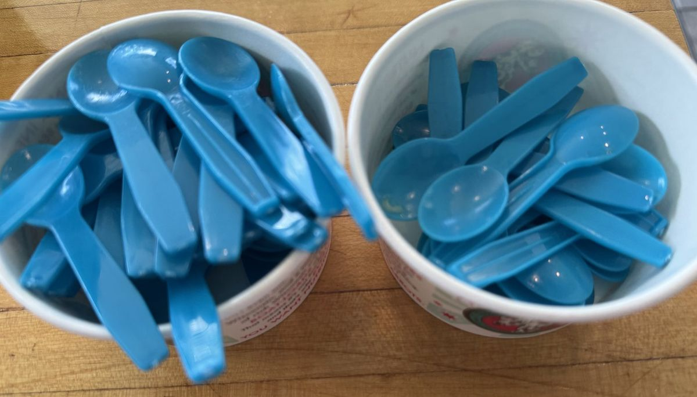

Blue Moon Oat Cream
The Junior Correspondents went immediately to Froot Loops, which turns out to be a remarkably useful description. Citrusy, cereal-milk-ish and blue enough to make clear that ordinary rules do not apply.
News so hyperlocal, it's amazing anyone takes an interest.
The Complete 56-Flavor Findings
The complete tasting record behind The Monroe Street Ice Cream Investigation, published by The Monroe Street Tattler.

All 56 flavors, A to Z
Showing all 56 flavors
The Junior Correspondents went immediately to Froot Loops, which turns out to be a remarkably useful description. Citrusy, cereal-milk-ish and blue enough to make clear that ordinary rules do not apply.
One Junior Correspondent compared it to cherry yogurt from a tube, but with a major upgrade: actual pieces of cherry appeared in the spoon. The cherry flavor came through clearly without overwhelming the oat base.
A nice Oreo-cream burst with plenty of cookie character. Even one Junior Correspondent who announced a general skepticism toward oat-based ice cream still conceded: “It’s ice cream, so it’s good.” Progress.
Tart rhubarb, plenty of crumble and a little cream-cheese richness made this one feel closer to dessert-counter territory than a standard scoop. Commissioners particularly appreciated the contrast between the bright rhubarb and buttery crumble.
Chocolate Shoppe promised notes of California Zinfandel, chocolate frosting and dense chocolate cake. The Commission somehow landed on Christmas cherry cordials. Rich, dark and very chocolaty either way.
Fresh mint with Andes candies, Grasshopper cookies and a chocolate fudge swirl. One Junior Correspondent described it as “my toothpaste, but a lot better.” The Commission considers this complimentary.
Vanilla and cherry came through together, with real pieces of cherry providing the occasional jackpot spoon. A gentle, classic combination with the added benefit of Wisconsin fruit credentials.
Bright, fruity and instantly nostalgic. Orange dominated much of the Junior Correspondent discussion, while at least one taster immediately identified its natural habitat: a birthday party.
The name generated excitement before the spoon arrived. Raspberry took the lead once tasting began, running through a cheesecake base, with chocolate chunks and whole Oreos submerged somewhere in the vicinity. One Junior Correspondent offered perhaps the most precise endorsement of the day: “If one of my friends got this, I’d have a bite.”
The Junior Correspondents knew exactly what to do with this one. Sprinkles, frosting energy, good texture and repeated declarations that it belonged at a birthday. Several investigators independently proposed it for an ice cream cake, which feels like useful field intelligence.
Visually, the panel compared it to Play-Doh. Flavor-wise, it proved much harder to define. Cherry, Blue Moon and vanilla combine into something big, sweet and genuinely difficult to explain. Several tasters also reported a tingling or slightly numb tongue, which only strengthened its superhero credentials.
Sweeter than the oat version and immediately familiar to Junior Correspondents who had ordered it before. One comparison landed especially well: blue raspberry Kool-Aid, if blue raspberry Kool-Aid became ice cream.
One of the earliest flavors to make the room stop and pay attention. Caramel and malt came through strongly, with chocolate and vanilla underneath. Multiple tasters independently declared it their favorite so far. The phrase “THIS IS THE BEST ONE YET” entered the official record.
Exactly the sort of bright carnival scoop its name promises. Some tasted bubble gum, others cotton candy, but one Junior Correspondent issued the first 5 of the investigation. Adults also nominated it for the highly technical category of Tastes Like the Name.
It smelled like graham cracker before anyone even tasted it. Then came caramel, graham, mix-ins and the general feeling of an extremely well-built sundae. “So, so, so good,” said one taster. A Junior Correspondent was more precise: 10 out of 10.
Very banana, with marshmallow ripple and Nilla Wafer pieces turning it into a proper banana-cream-pie situation. The room briefly discussed banana Runts, which will either help or hurt depending on your personal history.
This one tasted like comfort. Real strawberry flavor came through strongly, with enough fruit that the panel had no trouble identifying what was in the cup. One Commissioner summed it up simply: “Exactly what I’d want for strawberry ice cream.”
A serious showing for Team Oreo. Great texture, good cookie distribution and enough Oreo flavor throughout that several adults and Junior Correspondents put it in their top three. It also earned the Junior Correspondents’ No-Sharing Award, which may be the highest practical compliment available.
The Junior Correspondents immediately recognized the smell of their parents’ cold brew, which is roughly correct: the base is bourbon-spiked espresso, with bittersweet chocolate chunks throughout. Coffee comes through clearly and the sweetness stays well behind many of the surrounding flavors. One Junior Correspondent concluded: “If I’m a parent, I’d definitely get this for a wake-up ice cream.”
Chocolate people, report for duty. Three kinds of cocoa go into this one, and it lands somewhere in the neighborhood of a fudge brownie: deep, rich and unapologetically chocolaty. It inspired multiple variations of “extremely good.” One known chocolate skeptic remained unmoved, which only confirms that Zanzibar knows exactly what it is.
A creamy candy cane in ice cream form. Refreshing, sweet and unmistakably peppermint, with comparisons ranging from candy canes to a York Peppermint Patty without the chocolate. Even late in a 56-flavor tasting, the room lit up. The Bipartisan Scoop was born.
This one arrived with an existing constituency. “My favorite of all time.” “Number one.” “It smells delicious.” Junior Correspondents were particularly committed, while everyone could agree on the smooth, creamy texture and extremely fun combination of chocolate, marshmallow and Oreo.
The coffee flavors created some of the day’s finest Junior Correspondent apprehension. Once the adults got involved, this one earned praise for balance: espresso with chocolate and a nice little kick, plus larger chocolate chunks that several tasters appreciated.
Vanilla was not permitted to hide behind the excuse of being vanilla. Made with Madagascar vanilla and real vanilla bean flakes, the aroma was immediate, the texture was lovely, and more than one taster called it a favorite. Best Junior Correspondent assessment: “Better than normal vanilla.”
If Mint Avalanche is the maximalist cousin, Mint Chip is the cleaner classic. Mild mint, little chocolate flakes that crack pleasantly when you chew them, and a simple balance that lets the mint do most of the work.
A Junior Correspondent declared this “a mom flavor,” which was not further explained. The chocolate itself was smooth and surprisingly restrained, with one Commissioner specifically noting that it wasn’t overly sweet. Classic chocolate doing its job.
Chocolate Shoppe says vanilla ice cream swirled with root beer Italian ice. The Commission can confirm: that is exactly what happens. Creamy, balanced and immediately recognizable, with the Italian ice supplying just enough root beer bite to make the whole thing taste like the float you hoped you ordered. A strong contender for Most Accurate Flavor Representation.
The texture did most of the talking here. Soft cookie dough pieces, chocolate and repeated Junior Correspondent appreciation for the chunks. The only complaint was wanting more cookie dough, which may have been an unfortunate consequence of conducting science one tasting spoon at a time.
Chocolate-covered caramel cups and a gooey caramel swirl created enough richness to make a small spoon feel consequential. The chocolate-caramel bursts drew particular praise. One Junior Correspondent immediately went to Reese’s Cup, which captures the general neighborhood of the experience.
Maple announces itself immediately, then the waffle pieces arrive to provide texture and help balance the sweetness. It is big, fun and very much committed to the breakfast-for-dessert premise.
The base here is actual cheesecake ice cream, and the strawberry still comes through clearly. The panel split, but one Commissioner was firmly on Team Strawberry Cheesecake. For people who want their ice cream to lean confidently toward an actual slice of cheesecake, this is the lane.
The room got loud.
Sour green apple against a caramel ice cream base, with gooey caramel ribbons throughout, produced full-on old-school caramel apple sucker nostalgia for the adults and one Junior Correspondent, while the remaining Juniors maintained substantial objections. A little gooey. A little visually unusual. Absolutely unforgettable. The Generational Divide remains unresolved.
Approached with skepticism. Finished with converts. Mild, creamy and much more approachable than several panelists expected, including adults who do not normally seek out matcha. A deserved winner for Outstanding Achievement in Flavor Risk-Taking.
The first unanimous favorite of the investigation.
Before the spoon even arrived, the panel could smell lemon. Then came bright blackberry, lemon and buttery lemon-bar pieces. Fresh, summery and immediately loved by everyone at the table. Commissioner’s Citation for Overall Distinction.
The Junior Correspondents went wild. Oreo flavor, creamy cookie filling vibes and enough pure childhood energy that one taster threatened to move it ahead of longtime favorite Zoreo. Adults were more restrained. The children were not. Best Flavor for a Birthday and the Junior Correspondents’ Neighborhood Ambassador.
One of the more surprising adult findings. Despite being no-sugar-added, it came across sweeter and more flavorful than the Commission expected, with pomegranate and berry character running through the vanilla base. Adults were considerably more enthusiastic than the Juniors, another reminder that generations remain divided on important issues.
Nobody could accuse this flavor of hiding the cheesecake. The base is cheesecake ice cream and behaves accordingly, with blueberry providing the fruit counterpoint and cheesecake pieces reinforcing the point. This is for the person who orders cheesecake ice cream because they actually want cheesecake ice cream.
One adult literally yelled “YES!” before the investigation had fully concluded. Creamy lemon and marshmallow gave the panel a remarkably convincing frozen-lemon-meringue-pie experience. Adults took the lead on this one and issued two thumbs up.
A little salt can accomplish a lot. The salty-sweet combination earned immediate fans, with one Junior Correspondent putting it in the top ten. The salt itself received specific praise, which does not happen every day in ice cream journalism.
The sleeper hit of the entire investigation.
“Ew, there are real carrots.”
“I hate all vegetables. But especially carrots.”
Then they tasted it.
Bright mango, terrific texture, great aroma and virtually none of the carrot flavor everyone had feared. “Way better than it sounds.” “I’m shocked.” Several tasters immediately planned to order it next time. The Flavor We Owe an Apology To.
First finding: “Ooooh, that’s really pretty.” Second finding: it tastes good too. Sweet raspberry and tart lemon make this a bright, refreshing option that feels especially well suited to a hot day.
The color got immediate approval, followed by appreciation for the big chewy crust pieces. Then the panel split dramatically. One taster loved it. For key-lime devotees, there is plenty here to investigate personally.
The anticipation was enormous. Peanut butter cups, Oreos, M&Ms and a salted caramel ripple all appeared somewhere in the proceedings, supported by a cake-batter base and a lasting peanut-butter aroma. It became an immediate contender for Most Stuff In It, a category created largely because this flavor exists.
Everybody was excited to try it, and it delivered. Salted caramel ice cream, sea salt fudge and salted cashews add up to sweet, salty, crunchy and unusually balanced for something carrying this much material. Nothing overwhelmed anything else. One taster liked it enough to request consideration for the No-Sharing Award. The adult Commission named it its Neighborhood Ambassador.
The investigation began with allegations of “old man ice cream.” Those allegations were subsequently withdrawn.
Generously loaded with lightly roasted, salted pecans, it delivers a buttery richness and a classic salty-sweet thing happening throughout. By the end: “Not just for my grandparents anymore.”
This flavor received “oooos” before tasting and continued gaining ground afterward. Great peanut-butter aroma, cookie dough, chocolate and enough pull to prompt multiple requests for another spoon. “Best smell for miles.” Winner of The Comeback Bite.
Peanut butter and jelly in ice cream form is exactly the sort of proposal that requires an independent commission. Some approached cautiously. At least one adult came away genuinely impressed. Peanut butter ice cream, peanut butter swirls, grape jelly and pound cake bites made it weird enough to be interesting and familiar enough to work.
A restrained, balanced combination of caramel and cashew in a no-sugar-added base. The caramel came through nicely, and Commissioners appreciated that neither half of the pairing took over the whole scoop.
Sometimes a classic needs no reinvention. Chocolate, marshmallow and almonds produced a string of highly technical Junior Correspondent findings including “amazing,” “so good,” and finally “YES!!!!” Three Juniors asked for more. Case closed.
The cookie pieces became the story. Tasters kept coming back to those little bites, and one Junior Correspondent said they would happily eat the cookie component all by itself. A useful reminder to investigate the entire spoon.
Peanut butter fans should pay attention. Creamy peanut butter meets a salted caramel ripple, brownie chunks and crunchy chocolate-covered pretzels, creating exactly the kind of crunchy-creamy-salty texture shifts the Commission likes to overanalyze. Junior Correspondents gave particular credit to the pretzels.
The mix-ins looked good before the first bite, and the classic caramel-chocolate-nut combination did what classics tend to do: deliver. One adult called it a nice ice cream. A Junior Correspondent offered a stronger finding: “God. It was amazing.”
Whole pistachio pieces made this one immediately interesting. The almond-forward base prompted an unexpected Blue Moon comparison from the panel, with the pistachios adding a satisfying crunch and making sure nobody forgot what flavor they had ordered.
A Junior Correspondent immediately announced, “Oh, my mom really likes this one.” That tracks: Oreos, brownies, cookie dough, pecans, caramel and chocolate ripples are all invited. With this many mix-ins involved, every spoon becomes its own small investigation.
A proper coffee flavor and proud of it. Espresso comes through strongly, backed by fudge and crunchy almond. One Commissioner’s reaction: “I love that one. Why don’t I order this more?” Junior Correspondents expressed their own opinions with equal clarity.
A deeply Midwestern proposition: butterscotch, peanut butter, chocolate-covered rice crisps and the memory of an actual Scotcheroo bar. It performed better than expected and, importantly, inspired one Commissioner to announce that they should probably make Scotcheroos soon.
No flavor by that name was tasted. The Commission regrets the omission and will consider it for a future investigation.
Not every flavor produced agreement. That was never really the point.
The Commission did not taste 56 flavors to identify one correct answer. It tasted 56 flavors to find surprises, rediscover classics, argue about caramel apples, learn that children have extremely developed opinions about coffee ice cream, and send everyone home with a few new flavors worth trying.
If our findings seem obviously wrong, good.
Conduct your own investigation. The Tattler’s Family Ice Cream Investigation Kit is available at MonroeStreetTattler.com with everything you need to assemble your own tasting panel, choose five flavors, issue your findings, and report back to the newsroom.
Outside verification remains the foundation of good journalism. Ice cream is no exception.
The News Is Free. The Paper Is Not.
You just read all 56 tasting notes, free. Advertising pays for part of this paper. Reader contributions help with the rest.
If this guide was worth something to you, chip in.
One time or monthly. Both options are on the next screen.
The Tattler's Family Ice Cream Investigation Kit has everything you need to assemble your own tasting panel, choose five flavors at Chocolate Shoppe, and issue your findings.
Report back using the official submission form. Strong opinions are encouraged.
The Monroe Street Tattler. We cover the people, places, peculiarities and extremely minor developments that make a community interesting, with considerably more seriousness than the circumstances require.